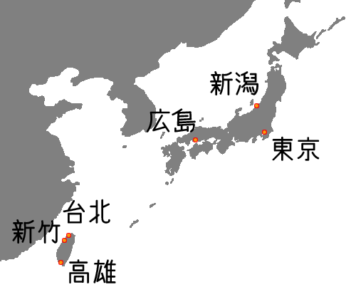

日本と台湾の気温
日本は台湾よりも『北』にあります。また、冬に『雪』が降るイメージから、夏でも涼しいと思いがちです。しかし、日本も夏ではとても暑くなります（台湾より暑いこともあります）。日本の気温は《冬は寒く・夏は暑い》のが特徴なのです。

下のグラフは、日本（東京・新潟・広島）と台湾（台北・新竹・高雄）の最高気温と最低気温の平均（1971年から2000年の30年間の平均）を月別に示したものです。
日本の都市では、冬の最低気温は０℃くらいですが、夏の最高気温は30℃以上あることがわかります。
- 今日も暑いですね。
- そうですね。もう、汗が止まりませんよ。
- 暑い日が続きますね。
- 本当に、どうなっているんですかね。
- もう暑くて嫌になりますね。
- こんな日は何もしたくないですね。
- 毎日毎日暑いですね。
- エアコンばっかり使ってるんで、電気代が怖いですよ。